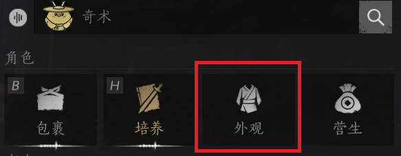
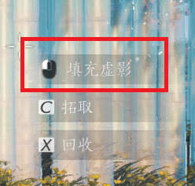
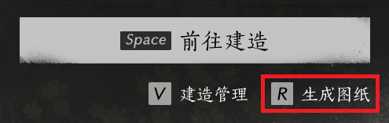
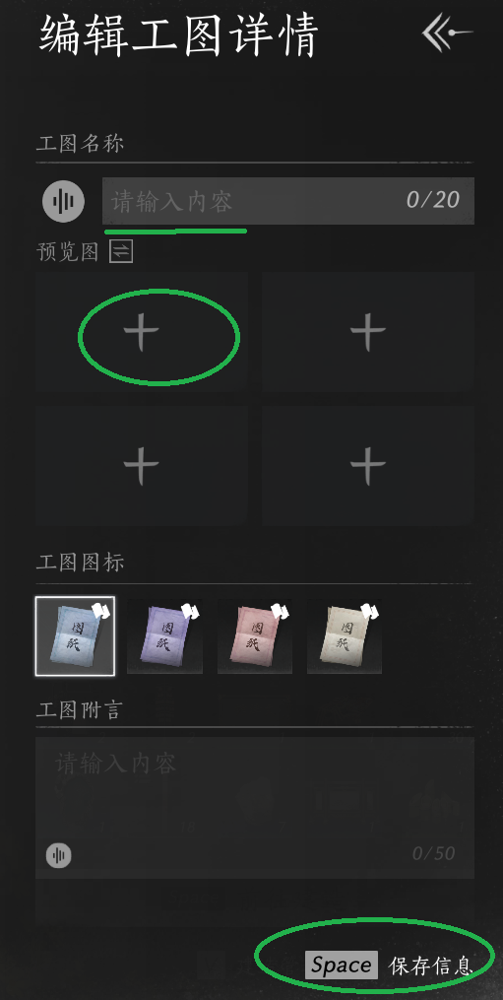

護肝攻略
墨山道快速刷建造和圖紙的方法
這個小攻略是給加入墨山道門派的夥伴們一個參考，如何快速刷滿論文以下兩項：

這兩項比較快速能做完，推薦夥伴們優先提升他們的論文分上限。
快速達成建造擺放
這里分享的方法是利用小圖紙來成組擺放建造物，節省一個一個建造和拆除的時間。（什么？你就喜歡每次造新的，一個一個造？那可以跳過這個攻略了~）
1）使用分享的竹子圖紙快速建造和拆除
這里的圖紙分享碼是SHAREb437990f7a196eaf，可以在家業的方外地建造和拆除。需要用到的材料如下：

比較熟悉按圖紙建造的夥伴可以跳過下面的詳細步驟，重點就是“找到小圖紙+成組擺放+填充虛影+直接回收”。
詳細使用步驟如下：
步驟 | 描述 | 圖片示例 |
|---|---|---|
1 | 打開菜單，點擊“外觀” |  |
2 | 點擊右邊“萬相集” |
|
3 | 選擇左邊的“建造”，找不到可以上下滾動一下。 |
|
4 | 右上角搜索欄填入圖紙分享碼SHAREb437990f7a196eaf |
|
5 | 點擊進入搜索出來的圖紙（應該只有一個搜索結果，點進去），點擊“取得圖紙” | |
6 | 傳送到方外地，找塊空地，F4進入建造模式 | |
7 | 打開建造背包（PC端快捷鍵是”B”），在背包里面找到對應這張小圖紙 |
|
8 | 點擊圖紙，選擇“擺放” |
|
9 | 跳出來的確認信息選擇“成組擺放” |
|
10 | 依舊在建造模式下，對著竹子虛影選擇“填充虛影” |  |
11 | 等待填充完畢之后直接選擇“回收” |
|
12 | 此時退出建造模式，確認論文“建造擺放”分數有沒有滿，沒滿就再從第6步重新擺放+拆除即可 |


2) 自己構建圖紙，快速建造和拆除
如果沒有這么多竹子可以造上面的圖紙，可以選擇囤2周的竹子，或者拆除一部分現有的竹子。或者用類似的方法自己設計一個圖紙，然后每周反復成組擺放。以下簡單介紹自己設計圖紙的步驟：
步驟 | 描述 | 圖片示例 |
|---|---|---|
1 | 先在一塊空地上造完你想要擺放的東西 | |
2 | 進入建造模式（PC端是F4） | |
3 | 進入建造菜單（PC端是~) |
|
4 | 菜單選擇“圖紙” |
|
5 | 然后選擇小圖紙這個tab ，之后選擇新建一個圖紙（綠色圈） |
|
6 | 這時候會高亮一個默認30 * 30的區域，要確認這個區域框住了所有你想包括在圖紙里面的建造物。可以拖動四個方向的箭頭調整方框大小和位置。滿意之后點“生成圖紙” |
|
7 | 然后就可以用上面竹子部分介紹的攻略，使用同樣方式反復成組擺放+拆除啦。 |


快速達成圖紙制作
這部分的攻略需要的前提是解鎖了清河家業的方外地。以下簡單介紹步驟。
步驟 | 描述 | 圖片示例 |
|---|---|---|
0 | 刪除上周背包里的圖紙。（進入建造模式->打開建造背包->選擇圖紙的家業tab->一個一個刪除上周的圖紙） | |
1 | 進入方外地，選擇右上角的錘子。 |
|
2 | 在右邊彈出的菜單選擇生成圖紙 |  |
3 | 輸入圖紙名稱，隨便拍個照片，然后保存。 |  |
4 | 等待圖紙生成完之后出現圖紙詳情，分享萬相集的右邊欄之后，點擊右上角回退，可以直接從步驟2開始。 | |
最后需要注意的是，本周生成的圖紙不要刪除，在下周才能刪。如果你馬上刪除，論文分就回退了。 |